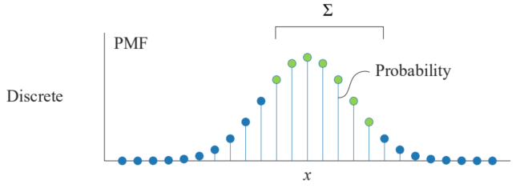
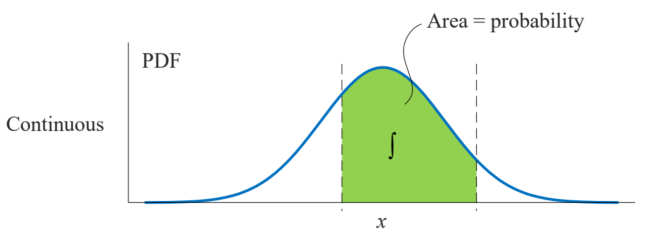

期望与方差
期望 (Expectation)
期望（也称为均值）是一个随机变量的“平均值”的度量。可以将其理解为在大量重复试验中，该随机变量所有可能取值的加权平均。权重就是每个值出现的概率。它的符号是。
- 离散型随机变量 (Discrete Random Variable)如果一个随机变量只能取有限个或可数个离散值（例如），每个值对应的概率为，那么它的期望计算公式为：理解：这个公式就是将每个可能的值乘以它发生的概率，然后将所有结果相加。
 - 连续型随机变量 (Continuous Random Variable)如果一个随机变量可以取某个区间内的任意值（例如，一个人的身高），它的概率由一个概率密度函数 (probability density function, pdf) 来描述。那么它的期望计算公式为：理解：这与离散情况类似，只是把求和换成了积分。它计算的是所有可能值与其对应的概率密度的乘积在整个范围内的积分。

方差 (Variance)
方差是用来衡量一个随机变量的取值与其期望（均值）的偏离程度的度量。简单来说，方差描述了数据的“分散程度”或“波动性”。方差越大，数据点越分散；方差越小，数据点越集中在期望值附近。它的符号是。计算公式为：
- ：计算每个可能值与期望值的差距（偏离）。
- ：将这个差距平方。使得负的偏离（值小于期望）和正的偏离（值大于期望）都变成正数，不会相互抵消；同时放大了较大偏离的影响。
- ：最后对这个平方差求期望，也就是计算这些平方差的“平均值”。
例子：用骰子的例子，。方差为：。
当离散随机变量的不同取值的概率相等时，概率质量函数为：，方差可以写成：
随机向量 (Random Vector)
随机向量是一个向量，它的每个分量（元素）本身都是一个随机变量。它常用于同时处理多个相关的随机变量。
这里的都是随机变量。上标表示转置 (Transpose)，意味着这是一个列向量。
例子：我们可以用一个二维随机向量来描述一个学生的学习情况，其中是他的数学成绩（一个随机变量），是他的物理成绩（另一个随机变量）。
随机向量的期望很简单，它是一个由向量中每个随机变量的期望组成的向量。
就是对随机向量里的每个元素分别求期望，然后把结果放回原位置，组成一个新的向量。
协方差 (Covariance)
协方差计算公式
对于一个包含个样本的数据集，两个变量和的样本协方差计算公式为：
其中：
- 和分别是第个样本中变量和的观测值。
- 和分别是两个变量的样本均值。
可以发现，随机变量和自身求协方差，得到的就是方差：
协方差描述的是两个随机变量联合变化的程度。例如，对于花瓣的长度和宽度，我们发现如果样本数据的花瓣长度越长，其花瓣宽度很大可能也越宽。这就是联合变化。而协方差以量化的方式来定量分析这种联合变化程度。
- 正协方差: 表示两个变量倾向于同向变化。即一个变量的值高于其均值时，另一个变量的值也倾向于高于其均值。反之亦然。（例如：身高和体重）
- 负协方差: 表示两个变量倾向于反向变化。即一个变量的值高于其均值时，另一个变量的值倾向于低于其均值。（例如：学习时间和游戏时间）
- 协方差接近0: 表示两个变量之间没有明显的线性关系。
几何视角：
将所有样本点（图中用 'x' 表示）画在散点图上。以两个变量的均值(平均花萼长度) 和(平均花萼宽度) 为中心，画出两条绿色的十字线，得到均值点。这两条线将整个图分成了四个象限。
对于任何一个数据点：
- 是这个点到垂直中心线的水平距离。
- 是这个点到水平中心线的垂直距离。
- 这两项的乘积，就是以均值点和数据点为对角顶点的矩形的面积。
带正负号的面积：
- 当和同号，面积为正，对应图中红色矩形。也就是说，红色矩形越多说 明，花萼长度越长，花萼宽度越宽；或者，花萼长度越短，花萼宽度越窄。
- 当和异号，面积为负，对应图中蓝色矩形。蓝色矩形越多说明，花萼长 度越长，花萼宽度越窄；花萼长度越短，花萼宽度越长。
协方差公式做的，就是把所有数据点对应的矩形面积加起来，再取一个平均值。
- 如果大部分数据点都落在红色区域，那么正面积之和会远大于负面积之和，最终的平均值（协方差）就是正的。这说明两个变量有很强的正相关性。
- 如果大部分数据点都落在蓝色区域，那么负面积会占主导，协方差就是负的。
- 如果数据点均匀分布在四个象限，红蓝面积会相互抵消，协方差就趋近于0。
协方差矩阵
协方差矩阵 (Covariance Matrix) 是方差在多维情况下的自然推广。对于一个包含个随机变量的随机向量，每两个分量之间都可以计算协方差，一共有个结果，将这些协方差汇总，就是一个的方阵，记为或。
由于随机变量和自身的协方差是方差，因此，这个的协方差矩阵可以这样表示：
等同于：
这个矩阵全面地描述了向量中各个分量自身的离散程度以及它们之间的相互关系。
- 矩阵的对角线上的元素 (第行第列) 是每个随机变量自身的方差，即。它表示了单个变量的波动大小。
- 矩阵的非对角线上的元素 (第行第列) 是对应两个随机变量之间的协方差，即。它衡量了两个变量和的线性相关性：
- 正协方差：表示增大时，也倾向于增大。
- 负协方差：表示增大时，倾向于减小。
- 协方差为0：表示两者之间没有线性关系。
协方差矩阵是一个对称矩阵，因为。它在多元统计分析、机器学习（如主成分分析PCA）等领域中至关重要。
例子：
对于鸢尾花数据集，一共有四个属性，sepal length（萼片长度）、sepal width（萼片宽度）、petal length（花瓣长度）、petal width （花瓣宽度），分别视为随机变量。可以计算出 协方差矩阵，并绘制出热图。
- 对角线 (方差)：对角线上的值是。我们可以看到，第三个特征“花瓣长度()”的方差最大，说明这个特征的数据分布最分散，变化范围最大。第二个特征“花萼宽度()”的方差最小，说明它的数据最集中。
- 非对角线 (协方差):
- (Sepal length, Petal length)：这是一个很大的正值，说明花萼长度和花瓣长度有很强的正相关关系，即花萼越长的花，花瓣也越长。
- (Sepal width, Petal length)：这是一个负值，说明花萼宽度和花瓣长度有一定的负相关关系，即花萼越宽的花，花瓣可能越短。
- 热图用颜色来可视化这些值，暖色调（黄色）代表强的正相关，冷色调（蓝色）代表强的负相关，中间色调（绿色）代表弱相关。这使得我们能迅速地从视觉上把握各个特征之间的关系。
线性相关系数
协方差：衡量两个变量同向或反向变化的程度。它的取值范围是。协方差的缺点是它的大小会受到变量本身尺度的影响。例如，将变量的单位从米变为厘米（数值乘以100），协方差会变大100倍，但这并不意味着它们的关联性变强了。
线性相关系数 (Linear Correlation Coefficient)：它是标准化（normalized）的协方差。它衡量的是两个变量之间线性关系的强度和方向。它的计算公式是：
通过除以两个变量各自的标准差，相关系数消除了尺度的影响。它的取值范围被固定在 之间，这使得它非常适合用来判断线性关系的强弱：
- : 强正线性相关
- : 强负线性相关
- : 无线性相关
高斯分布
高斯分布，也常被称为正态分布 (Normal Distribution)，是概率论与统计学中最重要的连续概率分布。它用来描述一个连续型随机变量的概率分布，其形状就是我们熟知的“钟形曲线”。
一元高斯分布
一元高斯分布 (Univariate Normal Distribution)，其概率密度函数 PDF 如下：
- 均值：这个参数决定了钟形曲线的中心位置。曲线的峰值（最高点）就在处。它代表了随机变量的期望值或平均水平。
- 方差：这个参数决定了钟形曲线的宽度或“胖瘦”。
- 标准差是方差的平方根，它衡量了数据围绕均值的分散程度。
- 越大，曲线越“矮胖”，表示数据分布越分散，不确定性越大。
- 越小，曲线越“高瘦”，表示数据分布越集中在均值附近，不确定性越小。
累积概率密度函数 CDF是单调非减函数，定义为。
一元高斯分布的累积概率密度函数 CDF：
下图比较标准正态分布的 PDF 和 CDF 曲线。虽然两条曲线画在同一幅图上，它们的轴数值的含义完全不同。对于 PDF 曲线，它的轴数值代表概率密度，并不是概率值。而 CDF 曲线的轴数值则代表概率值。
给定一点，图中背景为浅蓝色区域面积对应概率密度函数 PDF从到的面积，也就是 CDF 曲线的高度值。
多元高斯分布
多元高斯分布是一元高斯分布向多维空间的自然推广。它不再是描述一个随机变量，而是描述一个随机向量的概率分布，其中是一个包含个随机变量的向量。
对于这个随机向量的一个具体取值（一个维向量），其多元高斯分布的概率密度函数PDF为：
这个公式看起来复杂，但实际上它和一元高斯分布的结构是完全对应的。
- 均值向量：这是一个维的向量，决定了分布的中心位置。它是一元情况中均值的推广。
- 协方差矩阵：这是一个的对称矩阵，它是一元情况中方差的推广。是协方差矩阵的逆。等同于。
- 一元中的“距离平方”被推广为。
- 一元中的被推广为。
例子：给定。
一个二元正态分布的协方差矩阵通用形式是：
代入例子的数值，可以计算出协方差矩阵：
绘制对应的二元正态分布密度函数曲面，如图所示。
- 这个“山峰”的最高点的坐标就是由均值向量决定的。
- 这个“山丘”的形状是由协方差矩阵决定的。
- 如果山丘的底座是正圆形（如图所示），说明两个变量不相关，且方差相等。
- 如果底座是椭圆形，但长短轴与坐标轴平行，说明两个变量不相关，但方差不同。
- 如果底座是倾斜的椭圆形，说明两个变量之间存在相关性。
边缘分布
对于一个二元高斯分布，它在X轴和Y轴上的投影，称为边缘分布 (Marginal Distribution)，其结果就是对应的一元高斯分布。以之前的例子来说（图中的第一个）：
- X的边缘分布：这个二元分布在轴上的投影（忽略值，只看的分布），就是一个均值为，标准差为的一元高斯分布，即。
- Y的边缘分布：同理，这个二元分布在轴上的投影（忽略X值，只看的分布），就是一个均值为，标准差为的一元高斯分布，即。
这里就有一个非常有趣的结论：相关系数（在这个例子中是0.75）完全不影响边缘分布的形状。
- 无论是0，0.75，还是-0.9，的边缘分布永远是，的边缘分布永远是。
- 相关系数描述的是和联合时的关系，也就是决定了那个“山丘”的倾斜角度。但当我们从坐标轴的方向“降维”去看它的“影子”时，这个倾斜关系就消失了。
最大似然估计MLE
扔硬币例子
假如拿到一枚“特殊的”硬币。这枚硬币可能不是均匀的，也就是说，扔出正面（Head）的概率不一定是0.5。我们想知道这枚硬币的“真实属性”——它扔出正面的概率到底是多少？
这个问题可以被形式化地描述为：
- 我们定义一个参数来表示硬币扔出正面的概率，即。
- 相应地，扔出反面（Back）的概率就是。
- 我们的目标是：通过实验（扔次硬币）来估计出参数的值。
模型假设（Assumptions）
为了估计，我们首先需要对这个扔硬币的过程建立一个数学模型。这需要做一些基本但合理的假设：
- 单次试验服从伯努利分布 (Bernoulli Distribution)
- 每一次扔硬币只有两种可能的结果：正面或反面。
- 这两种结果的概率由同一个参数决定。
- 这种只有两个结果、单次进行的随机试验，在概率论中被称为伯努利试验，其结果的概率分布就是伯努利分布。
- 试验是独立同分布的 (i.i.d. - independent and identically distributed)
- 独立 (Independent)：每次扔硬币的结果都是独立的，互不影响。你第次扔出正面，并不会影响第次扔出正面的概率。硬币没有“记忆”。
- 同分布 (Identically Distributed)：每次扔硬币都遵循相同的概率分布。也就是说，参数的值在每次试验中都是固定不变的。硬币不会“疲劳”或被偷换了一枚不同的硬币。
基于以上假设，整个实验实际上服从二项分布 (binomial distribution)。当我们进行了一系列实验，比如，我们扔了次硬币，得到了一个观测数据集，其中包含了次正面和次反面。
似然的概念 (Likelihood)
现在我们有了数据，我们的目标是估计。最大似然估计的思想非常直观：既然我们已经观测到了这个特定的数据，那么我们就应该选择一个参数的值，使得这个数据出现的概率最大。
这个“数据出现的概率”就被称为似然 (Likelihood)。
我们可以使用条件概率来表示它。这个表达式的含义是：
这个条件概率也被称为似然函数 (Likelihood Function)，记作。虽然它在数值上等于，但理解的角度不同：
- 当我们把它看作是条件概率时，我们是已知，讨论不同数据出现的可能性。
- 当我们把它看作是似然函数时，我们是已知（已观测到）观测数据，把它看作是关于未知参数的函数。我们的目标就是找到使这个函数值最大的。
根据我们之前 i.i.d. 的假设，整个观测序列 (包含次正面和次反面)出现的概率，等于每一次投掷结果的概率的乘积：
- 每次出现正面的概率是。我们观测到了次正面，所以这部分的联合概率是(共次)，即。
- 次出现反面的概率是。我们观测到了次反面，所以这部分的联合概率是 (共次)，即。
因此，观测到含有次正面和次反面的数据集的总概率（即似然函数）就是：
接下来的步骤就是最大化这个似然函数。也就是说，我们要找到一个 值，使得的值最大。一般来说，通过微积分（对该函数求导并令其为0），可以解出这个。
最大化对数似然函数
硬币问题的似然函数是一个乘积的形式。如果我们的数据集非常大（例如有个数据点），似然函数会是项的连乘，对其求导会变得极其复杂（需要反复使用乘法求导法则）。
为了解决这个问题，我们引入了一个非常巧妙的数学工具：对数。我们不去直接最大化似然函数，而是去最大化它的对数形式——对数似然函数
这么做有两个关键原因：
- 数学等价性：对数函数（如 或）是一个单调递增函数。这意味着，如果 ，那么。因此，能使达到最大值的那个，也必然会使达到最大值。它们在同一个位置取得峰值，所以优化对数似然得到的结果和优化原始似然是完全一样的。
- 计算简便性：这是最实际的好处。对数函数有一个神奇的性质，它可以将乘法变为加法，将指数变为乘法。这使得求导过程大大简化。
现在，我们来完成对硬币问题的求解：
写出对数似然函数：
对求偏导：
令导数等于零：
求解：
这个结果完全符合我们的直觉：对于抛硬币问题，正面概率的最佳估计值就是我们观测到的正面出现的频率。
最大似然估计
通过上面的例子，我们可以总结出最大似然估计的一般性步骤。
一般性步骤
前提：必须先对我们观测到的数据做一个概率模型假设。也就是说，必须先假设拿到的数据点是从某个形式已知但参数未知的概率分布中抽样出来的。例如，在硬币问题中，我们假设单次抛掷服从伯努利分布。这个假设是整个 MLE 方法的基石。
流程如下：
- 观测数据 (Observe Data)： 获取一组独立同分布 (i.i.d.) 的观测数据。我们假定这些数据服从一个形式已知的概率分布，但内部参数未知——某个“真实”的参数。我们的目标是去估计它。
- 建立似然函数 (Build the Likelihood Function)：
根据独立同分布的假设，整个数据集出现的联合概率是每个数据点出现概率的乘积。这就是似然函数：
- 建立对数似然函数 (Log-likelihood)：
对似然函数取对数，将连乘转化为连加，简化计算：
- 最大化对数似然 (Maximize Log-Likelihood)：通过微积分（求导并令其为零）或其他优化算法，找到使对数似然函数达到最大值的参数。这个解就是最大似然估计量。这里的符号表示“找到那个能使函数值最大的参数。
这个四步流程是许多机器学习模型（如逻辑回归、高斯混合模型等）参数估计的核心。
多维高斯分布
现在，以多维高斯分布为例，对符合高斯分布（参数未知）的一系列数据点进行最大似然估计，估计出未知的均值和协方差参数。
问题的设定
- 数据 (Data)：我们拥有一组数据集，包含个数据点。
- 假设(Assumption)：这些数据点都是从同一个未知的高斯分布中独立同分布 (i.i.d.) 采样得到的。这里的表示这是我们想要寻找的真实参数。
- 目标(Qes)：找到一组参数，使得这组参数能够使我们观测到的数据出现的概率最大。这个“最大化概率”就是通过最大似然估计来定义的。
首先，回顾一下多维高斯分布 (Multi-variate Gaussian distribution) 的概率密度函数 (PDF)：
其中：
- 是一个维的随机向量，是一个随机向量的一个具体取值。
- 是分布的维均值向量，是一元情况中均值的推广。
- 是一个的协方差矩阵，它描述了各个维度之间的相关性，是一元情况中方差的推广。
建立似然函数 (Build the Likelihood Function)：
- 似然函数 (Likelihood)因为所有数据点是独立同分布的，所以我们观测到整个数据集的联合概率（即似然函数）是每个数据点出现的概率的乘积：
- 解释：将PDF 的值当作“概率”我们知道，对于连续型随机变量（如高斯分布），任何单个精确点的概率都为零（即PDF的值不是概率）。那么，为什么似然函数要用概率密度函数（PDF）的值来构建呢？对于单个连续型数据点出现的概率，我们可以认为它落在一个极小的区域内。这里，就是高斯分布在该点的概率密度函数(PDF)值。现在，我们考虑整个数据集。因为数据点是独立同分布 (i.i.d.) 的，所以所有数据点都恰好落在各自微小区域内的联合概率为：展开这个连乘积，我们发现第二部分是一个极小的正数常量。它的大小不随我们选择的参数变化。因此，要最大化整个概率表达式，我们只需要最大化第一部分，也就是似然函数。这就是为什么我们在最大似然估计中可以直接使用PDF 的值当作“概率”。
- 对数似然函数 (Log-likelihood)将高斯分布的 PDF 代入后，会得到一个非常复杂的、连乘指数的表达式。为了便于计算，我们取其对数，将连乘变为连加。最大化似然函数等价于最大化对数似然函数。经过化简，最终得到的对数似然函数为：我们的目标就是找到能最大化这个的和。
最大化对数似然函数 (Maximize Log-Likelihood)
- 求解均值我们首先对求偏导 (梯度)，并令其等于零。求导后得到：令梯度为零：因为协方差矩阵是正定的，其逆矩阵也存在且可逆。所以我们可以两边同乘，得到了一个得到了一个不依赖于的等式：解得：结论：高斯分布均值的最大似然估计就是所有数据点的样本均值 (sample mean)。
- 求解协方差矩阵接下来，我们将上面求得的代入对数似然函数，然后对求导。这里使用了一个矩阵微积分 的技巧，即对求导，会使计算更简单。令梯度为零，经过整理可得：结论：高斯分布协方差矩阵的最大似然估计非常接近协方差的计算式，唯一的区别在于其分母是，而不是之前协方差计算式中的。
估计器的偏差分析
既然得到了高斯分布的最大似然估计的参数值，那么我们可以更进一步，评估一下我们得到的两个估计器 (和) 的好坏，具体来说，是分析它们是否是无偏估计 (unbiased estimator) 。无偏估计指的是估计量的期望值等于参数的真实值。
- 均值估计器是无偏的我们来计算的期望值：因为每个数据点都来自于真实分布，所以它们的期望都是真实的均值。结论：由于，所以均值的最大似然估计是无偏的。
- 协方差估计器是有偏的计算的期望值相对繁琐，这里直接给出计算后的式子：可以看到，它的期望值比真实值小了一个因子。这是一个非常不好的发现。一个解释是：在计算协方差时，我们必须用到样本均值，而不是真实的均值。而样本均值是根据这个数据点算出来的，它天然地比真实的均值更“靠近”这组观测数据。这导致计算出的离差平方和会系统性地比使用真实均值时要小一些，从而低估了真实的协方差。因此，数学家们为了修正这个偏差，统计学中定义了无偏样本协方差矩阵 (unbiased sample covariance) ，其分母是而不是：这个修正被称为贝塞尔校正 (Bessel's correction) 。这个新的估计量不再是我们前面计算的MLE 估计量，但是当很大时，和的差别很小，因此MLE 的估计也是渐近无偏的。这也是我们前面学到的“协方差计算公式”中，分母是的原因。
总结一下：
- 最大似然估计的结果 (MLE Estimator):通过最大化似然函数，我们推导出的协方差矩阵估计量是：这个公式的分母是。在很多机器学习和优化的教材中，这个也被直接称为“样本协方差矩阵”，因为它完全是由样本数据计算得出的。
- 无偏样本协方差矩阵 (Unbiased Sample Covariance Matrix):在传统的推断统计学中，我们非常关心估计量的无偏性。为了修正 MLE 估计量的偏差（我们稍后会证明），统计学家定义了无偏样本协方差矩阵，其分母是：在大多数基础统计学课程中，当提到“样本协方差矩阵”时，通常指的是这个无偏的版本。
💬 评论区